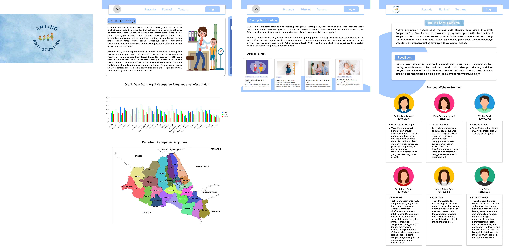
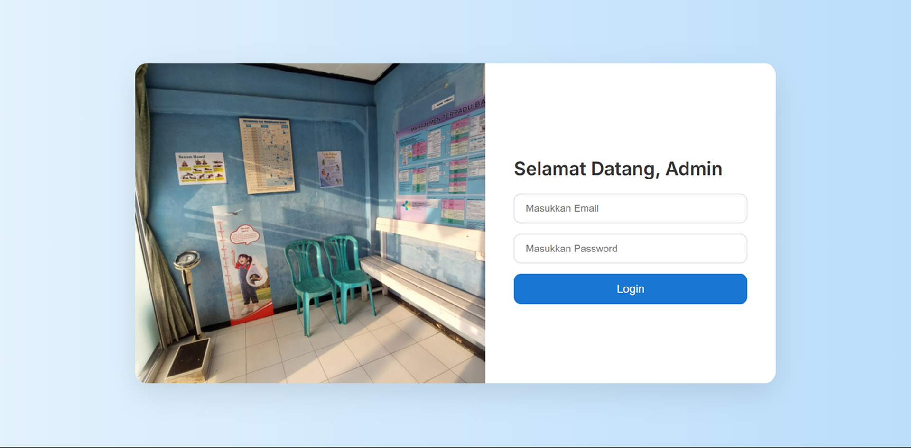
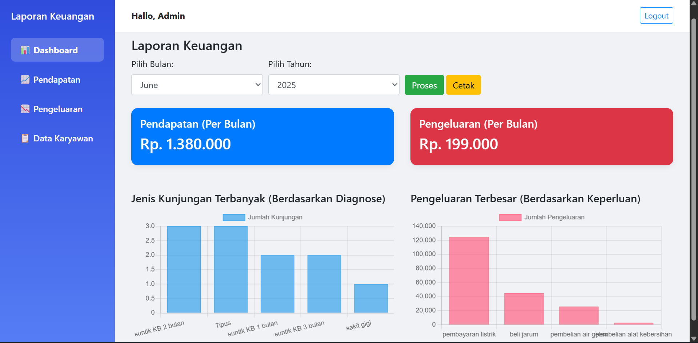
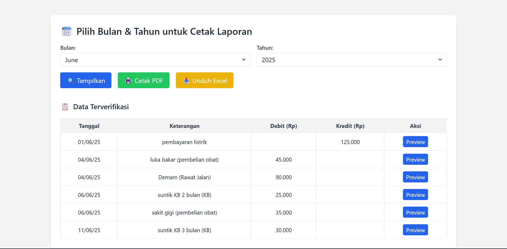
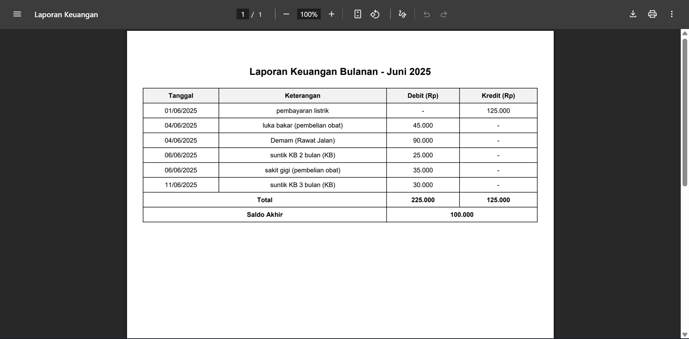
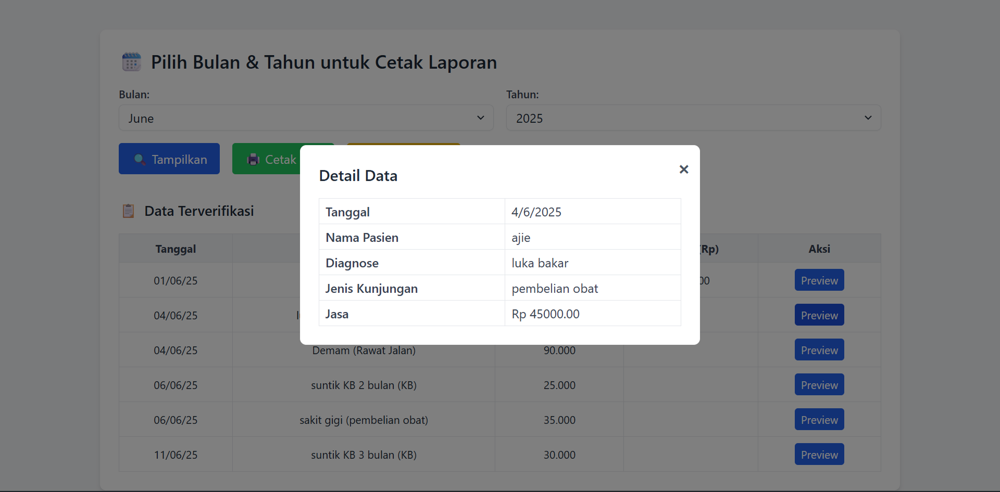

Karya Terpilih
Redesign Aplikasi GoFood - Eco-Friendly Section
Proyek UI/UX hasil program MSIB GreatEdu yang berfokus pada fitur ramah lingkungan.


Tampilan High Fidelity dan Low Fidelity
Kontribusi Utama:
- Wireframing (Low-Fidelity): Menyusun kerangka dasar desain (layout) untuk memastikan penempatan fitur "Eco-Friendly Section" mudah ditemukan dan dipahami oleh pengguna.
- Interactive Prototyping: Membangun simulasi desain yang interaktif menggunakan Figma, sehingga alur penggunaan aplikasi—mulai dari memilih merchant hingga menukarkan poin—bisa diuji coba secara nyata.
- User Flow Optimization: Merancang urutan langkah yang efisien agar pengguna tidak bingung saat ingin berkontribusi pada program ramah lingkungan.
AnTing: Sistem Informasi Pencegahan Stunting (Banyumas)
Mengembangkan platform berbasis web sebagai solusi digital untuk memantau tumbuh kembang anak dan memberikan edukasi gizi guna menekan angka stunting di Kabupaten Banyumas.

Tampilan Website
Kontribusi Utama:
- Menerapkan metodologi Waterfall dalam siklus pengembangan sistem, mulai dari analisis kebutuhan hingga pengujian.
- Merancang antarmuka pengguna (UI) yang responsif menggunakan Bootstrap agar mudah diakses oleh tenaga kesehatan maupun masyarakat umum.
- Mengintegrasikan fitur Monitoring Gizi yang memungkinkan input data berat dan tinggi badan untuk klasifikasi status gizi anak secara otomatis.
- Mengelola basis data sistem menggunakan MySQL untuk penyimpanan data kesehatan yang terstruktur.
Rancang bangun aplikasi laporan keuangan pada Praktik Mandiri Bidan
Mengembangkan sistem informasi akuntansi berbasis web untuk mendigitalisasi pencatatan transaksi keuangan, pengelolaan data pasien, hingga pembuatan laporan jurnal umum dan buku besar secara otomatis.





Tampilan Website
Pencapaian Teknis & Fitur:
- Otomatisasi Laporan mengubah proses pembukuan manual yang rumit menjadi otomatis, yang menghasilkan Laporan Jurnal Umum, Buku Besar, dan Laporan Keuangan secara akurat.
- Alur Kerja Sistematis: Mengikuti tahapan pengembangan yang terencana, mulai dari mendengarkan kebutuhan pengguna dan memastikan aplikasi berjalan tanpa error.
- Menggunakan framework Laravel untuk memastikan sistem tidak hanya cepat, tapi juga memiliki tingkat keamanan data yang tinggi bagi pihak klinik.
- Mengelola basis data sistem menggunakan MySQL untuk penyimpanan data yang terstruktur.
Pengalaman
Kepanitian Welcoming Party Informatics (2022)
Panitia Divisi Pendamping Kelas
- Mengelola dan mendampingi kelompok mahasiswa baru untuk mempercepat adaptasi dengan lingkungan program studi teknik informatika.
- Memfasilitasi diskusi interaktif yang berhasil meningkatkan kekompakan dan pemahaman mahasiswa terhadap kurikulum serta prospek karir di bidang IT.
Magang dan Studi Independen Bersertifikat (MSIB) Kampus Merdeka (2023)
Peserta Aktif - SIB Cycle 5 GreatEdu - UI/UX Bootcamp
- Mempelajari dan menerapkan metodologi desain UI/UX, mulai dari user research, wireframing, hingga prototyping menggunakan Figma.
- Berkontribusi dalam tim untuk melakukan redesign aplikasi GoFood dengan merancang fitur “Eco-Friendly Section” yang berfokus pada penyediaan merchant dengan kemasan ramah lingkungan.
- Merancang antarmuka (UI) dan alur pengguna (user flow) untuk sistem poin khusus yang dapat ditukarkan dengan rewards seperti cashback dan voucher untuk meningkatkan user retention.
Keahlian
UI/UX dan Multimedia: Figma, Adobe Photoshop, Canva, Capcut.
Software & Tools: Microsoft Office (Word, PowerPoint, Excel).
Pemrograman Dasar: PHP, JavaScript, C++, HTML/CSS
Soft Skills: Kreativitas, Komunikasi Efektif, Kerja Sama Tim, Kemampuan Analitis.